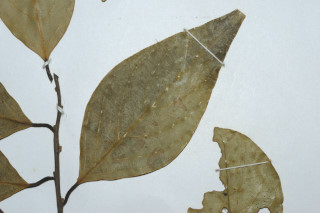
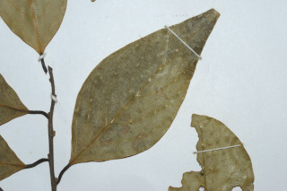
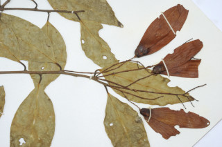
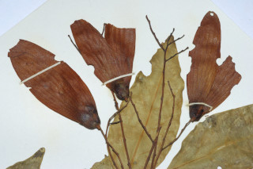
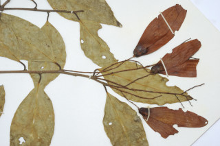
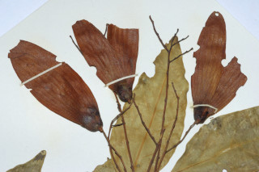

Trees ca. 20 m tall.
ಅಂದಾಜು 20 ಮೀ. ಎತ್ತರದವರೆಗಿನ ಮರಗಳು.
ഏതാണ് 20 മീറ്റര് വരെ ഉയരത്തില് വളരുന്ന മരങ്ങള്.
மரம் 20 மீ. உயரம் வரை வளரக்கூடியது
Bark brownish.
ತೊಗಟೆ ಕಂದು ಬಣ್ಣ.
തവിട്ട് നിറത്തിലുളള പുറംതൊലി.
மரத்தின் பட்டை அரக்கு நிறமுடையது.
Branchlets dark colored, terete, glabrous.
ಕಿರುಕೊಂಬೆಗಳು ದಟ್ಟವಾದ ಬಣ್ಣ ಹೊಂದಿದ್ದು,ದುಂಡಗಿದ್ದು, ರೋಮರಹಿತವಾಗಿರುತ್ತವೆ.
ഇരുണ്ടനിറത്തിലുളള, ഉരുണ്ട, അരോമിലമായ ഉപശാഖകള്.
சிறுநுனிக்கிளைகள் கருமை நிறமுடையது, குறுக்குவெட்டுத் தோற்றத்தில் வளையமானது, உரோமங்களற்றது.
Leaves simple, alternate, spiral; stipules caducous; petioles ca. 2 cm long; lamina 5.5-10 x 2-4 cm, ovate-lanceolate, apex gradually acute with blunt tip, base acute, glabrous; midrib flat above; secondary_nerves ca. 8 pairs, oblique, prominent above; tertiary_nerves closely_horizontally_percurrent.
ಎಲೆಗಳು ಸರಳವಾಗಿದ್ದು, ಪರ್ಯಾಯ ಹಾಗೂ ಸುತ್ತು ಜೋಡನಾ ವ್ಯವಸ್ಥೆಯಲ್ಲಿರುತ್ತವೆ; ಕಾವಿನೆಲೆಗಳು ಉದುರಿಹೋಗುತ್ತವೆ;ತೊಟ್ಟುಗಳು ಅಂದಾಜು 2 ಸೆಂ.ಮೀ.ಉದ್ದವಿರುತ್ತವೆ;ಪತ್ರಗಳು 5.5-10 X 2-4 ಸೆಂ.ಮೀ ಗಾತ್ರ, ಅಂಡ-ಭರ್ಜಿಯ ಆಕಾರ,ಮೊಂಡು ಅಗ್ರವುಳ್ಳ ಕ್ರಮೇಣ ಚೂಪಾಗುವ ತುದಿ, ಚೂಪಾದ ಬುಡ ಹೊಂದಿದ್ದು ರೋಮರಹಿತವಾಗಿರುತ್ತವೆ;ಮಧ್ಯನಾಳಗಳು ಪತ್ರದ ಮೇಲ್ಭಾಗದಲ್ಲಿ ಚಪ್ಪಟೆಯಾಗಿರುತ್ತವೆ ;ಎರಡನೇ ದರ್ಜೆಯ ನಾಳಗಳು 8 ಜೋಡಿಗಳಿದ್ದು,ಓರೆಯಾಗಿರುತ್ತವೆ ಹಾಗೂ ಪತ್ರದ ಮೇಲ್ಭಾಗದಲ್ಲಿ ಪ್ರಮುಖವಾಗಿರುತ್ತವೆ; ಮೂರನೇ ದರ್ಜೆಯ ನಾಳಗಳು ಲಂಬರೇಖೆಗೆ ಸಮಕೋನದಲ್ಲಿದ್ದು, ಸನಿಹವಾಗಿ ಎಲೆದಿಂಡಿಗೆ ಅಡ್ಡವಾಗಿ ಕೂಡುವಂತವು.
ഇലകള് ലഘുവും ഏകാന്തരമായി സര്പ്പിളക്രമത്തിലുളളതുമാണ്; അനുപര്ണ്ണങ്ങള് എളുപ്പം കൊഴിഞ്ഞു പോകുന്നതാണ്; ഇലഞെട്ടിന് ഏതാണ്ട് 2 സെ.മീ നീളവും; പത്രഫലകത്തിന് 5.5 സെ.മീ മുതല് 10 സെ.മീ വരെ നീളവും 2 സെ.മീ മുതല് 4 സെ.മീ വരെ വീതിയും അണ്ഡാകാര-കുന്താകൃതിയാണ്, മുനപ്പില്ലാത്ത അറ്റത്തോടുകൂടിയ നിശിതാഗ്രം, പത്രാധാരം നിശിതമാണ്, അരോമിലം; മുകളില് പരന്നിരിക്കുന്ന മുഖ്യസിര; ഏതാണ്ട് 8 ജോഡി, ചരിഞ്ഞതും, മുകളില് പ്രകടമായിരിക്കുന്നതുമായ ദ്വിതീയ ഞരമ്പുകള്; ത്രിതീയ ഞരമ്പുകള് തിരശ്ചീനമായി, വളരെ അടുത്ത പെര്കറന്റ് വിധത്തിലാണ്.
இலைகள் தனித்தவை, மாற்றுஅடுக்கமானவை, சுழல் அமைப்பு கொண்டது; இலையடிச்செதில்கள் உதிரக்கூடியது; இலைக்காம்பு தோராயமாக 2 செ.மீ., நீளமானது; இலை அலகு 5.5-10 X 2-4 செ.மீ. முட்டை-ஈட்டி வடிவமுடையது, அலகின் நுனி சிறிது சிறிதாக குறுகி வால் போன்று நீண்டு மற்றும் முனை மழுங்கியது, அலகின் தளம் கூரியது, உரோமங்களற்றது; மையநரம்பு மேற்புறத்தில் அலகின் பரப்பிற்கு சமமானது; இரண்டாம் நிலை நரம்புகள் தோராயமாக 8 ஜோடிகள், வளைவானது, மேற்பரப்பில் தெளிவானது; மூன்றாம் நிலை நரம்புகள் கிடைமட்டமான பெர்க்கரண்ட்.
Inflorescence panicles, in axillary fascicles, often 1-3 together, as long as or longer than leaves; flowers creamy-yellow, ca. 0.6 cm long.
ಪುಷ್ಪಮಂಜರಿಗಳು ಪುನರಾವೃತ್ತಿಯಾಗಿ ಕವಲೊಡೆಯು ಮಾದರಿಯಲ್ಲಿದ್ದು ಅಕ್ಷಾಕಂಕುಳಿನಲ್ಲಿರುವ ಗುಚ್ಛಗಳಲ್ಲಿರುತ್ತವೆ, ಹಲವು ಬಾರಿ ಒಂದರಿಂದ ಮೂರು ಒಟ್ಟಿಗಿರುತ್ತವೆ;ಪುಷ್ಪಮಂಜರಿಗಳು ಎಲೆಗಳಷ್ಟು ಅಥವಾ ಅವುಗಳಿಗಿಂತ ಹೆಚ್ಚು ಉದ್ದವಿರುತ್ತವೆ;ಹೂಗಳು ಕೆನೆ ಮಿಶ್ರಿತ ಹಳದಿ ಬಣ್ಣದಲ್ಲಿದ್ದು ಅಂದಾಜು 0.6 ಸೆಂ.ಮೀ. ಉದ್ದವಿರುತ್ತವೆ.
ഇലക്കൊത്തതോ അതിനേക്കാളോ നീളമുളള, പാനിക്കിള് പൂങ്കുലകള്, മിക്കവാറും 1 മുതല് 3 എണ്ണംവരെ ഒന്നിച്ച്, കക്ഷീയ കൂട്ടങ്ങളിലുണ്ടാകുന്നു; ഏതാണ്ട് 0.6 സെ.മീ നീളമുളള, ക്രീം-മഞ്ഞ നിറത്തിലുളള പൂക്കള്.
பேனிக்கிள் மஞ்சரி, இலைக்கோணங்களில் தொகுப்பாக காணப்படும், 1-3 மலர்கள் சேர்ந்தது, இலை அல்லது இலையை விட பெரியது; மலர்கள் கிரீம்-மஞ்சள் நிறமானது, தோராயமாக 0.6 செ.மீ. நீளமுடையது.
Nut, ca. 1.8 cm long, ovoid or ellipsoid, apiculate, smooth; calyx_accrescent with two longer and three smaller lobes; seed 1.
ಕಾಯಿಗಳು ಕರಟ ಮಾದರಿಯಲ್ಲಿದ್ದು ಅಂದಾಜು 1.8 ಸೆಂ.ಮೀ. ಉದ್ದವಿದ್ದು, ಅಂಡಾಕಾರ ಅಥವಾ ಅಂಡವೃತ್ತಾಕಾರ ತುದಿಯಲ್ಲಿ ಸೂಕ್ಷ್ಮ ಮೊನಚು ಮುಳ್ಳನ್ನು ಹೊಂದಿದ್ದು ನಯವಾಗಿರುತ್ತವೆ. ಪುಷ್ಪಪಾತ್ರೆ ವೃದ್ಧಿಸಿದ್ದು 2 ಉದ್ದವಾದ ಹಾಗೂ ಮೂರು ಸಣ್ಣದಾದ ಹಾಲೆಗಳ ಸಮೇತವಾಗಿರುತ್ತದೆ ಹಾಗೂ ಒಂದು ಬೀಜವನ್ನೊಳಗೊಂಡಿರುತ್ತವೆ.
കായ ഏതാണ്ട് 1.8 സെ.മീ നീളമുളള, അണ്ഡാകാരമോ ദീര്ഘഗോളാകാരമോ ആയ, അറ്റത്തൊരു മുനപ്പോടുകൂടിയ, മിനുസമാര്ന്ന നട്ട് ആണ്; 2 വലുതും 3 ചെറുതും ഭാഗങ്ങളുളള ഒട്ടിച്ചേര്ന്നു നില്ക്കുന്ന വിദളങ്ങളുണ്ട്; ഒറ്റവിത്തുമാത്രം.
உலர்கனி (நட்), 3 தோராயமாக 1.8 செ.மீ. நீளமானது, முட்டை வடிவம் அல்லது நீள்வட்டமானது, ஏப்பிகுலேட், வழுவழுப்பானது; நிரந்தரமான புல்லி இதழ்கள் மற்றும் இரண்டு பெரிய புல்லி இதழ்கள் மற்றும் மூன்று சிறிய புல்லி இதழ்கள் கொண்டவை; ஒரு விதை கொண்டது.
 

 


